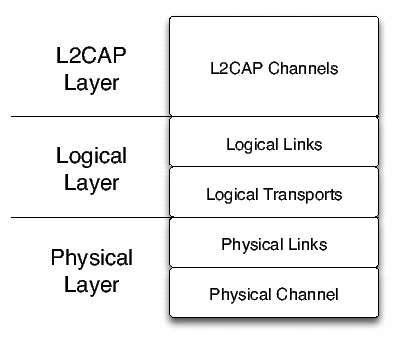
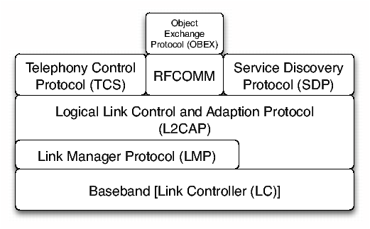

Die Datenübertragungsraten sind abhängig von der Spezifikation bzw. der Bluetooth-Version des jeweiligen Produkts. Die Übertragungsrate hat sich während der ersten drei Versionen nicht gesteigert, sie wurde erst mit der Bluetooth-Spezifikation Version 2.0 erhöht. Ein Überblick über die Übertragungsraten, sowie die grossen Änderungen/Probleme, der jeweilgen Bluetooth-Versionen ist in [Tab.: 2.2] dargestellt.
Klassifikation Reichweite Sendeleistung Klasse 1 100 m 100 mW Klasse 2 40 m 2.5 mW Klasse 3 10 m 1 mW Tabelle 2.1: Reichweiten der einzelnen Bluetooth Klassen (Vgl. : [Wik06b])
Der Datentransport innerhalb der Bluetooth-Architektur sowie sämtliche Betriebsmodi folgen dem selben generischen Ansatz. Dieser generische Ansatz ist mit Hilfe einer Schichtenarchitektur realisiert, die in [Abb.: 2.1] dargestellt, und mit dem OSI-Schichtenmodell vergleichbar ist.
Bluetooth-Version Maximale Datenübertragungsrate Änderung/Problem 1.0 und 1.0B 723.2 Kbit/s Enthält Sicherheitsprobleme 1.1 723.2 Kbit/s Indikator für die Signalstärke hinzugefügt Received Signal Strength Indicator (RSSI) 1.2 723.2 Kbit/s Adaptive Frequency-Hopping spread spectrum (AFH) eingeführt; reduziert Interferenzen mit anderen Funktechnologien (z. B. WLAN) 2.0 2.1 Mbit/s Etwa dreifache Datenübertragungsgeschwindigkeit durch Enhanced Data Rate (EDR) Tabelle 2.2: Datenübertragungsraten von Bluetooth (Vgl. : [Wik06b, Versionen])
Abbildung 2.1: Allgemeine Datentransport Architektur von Bluetooth (Vgl. : [Blu03, Architecture, S.25; PDF, S. 101])
Die Authentifizierung beider Geräte erfolgt in zwei Schritten, das heisst es wird eine gegenseitige Authentifizierung beider Geräte vorgenommen. In direktem Anschluss der Authentifizierung des Geräts A bei Gerät B wird die Authentifizierung in entgegengesetzter Richtung vorgenommen10 (Vgl. : [Blu03, Security Specification, S. 758; PDF, S. 914]).
Entität Grösse Bluetooth Device Address (BD_ADDR) 48 Bit Privater Schlüssel des Benutzers (Authentifizierung) 128 Bit Privater Schlüssel des Benutzers (Verschlüsselung) 8-128 Bit Pseudozufallszahl (RAND) 128 Bit Tabelle 2.3: In Authentifizierung und Verschlüsselung involvierte Entitäten (Vgl. : [Blu03, Security Specification, S. 749; PDF, S. 907 Tabelle 1.1])
Die Spezifikation des GAP beschäftigt sich hauptsächlich damit, zu beschreiben, welchem Zweck die unteren Schichten des Bluetooth Protokollstapels dienen (LC und LMP). Um Sicherheitsbezogene Alternativen zu diskutieren, wurden ebenfalls höhere Ebenen mit einbezogen (L2CAP, RFCOMM und OBEX) [Blu03, Generic Access Profile, S. 181; PDF: S. 1129].Abbildung 2.2: GAP Schichtenmodell (Vgl.: Abbildung 2.1: Profile stack covered by this profile, S. 181 [Blu03])
Die spezifizierten Werte der Zugriffskennzeichner LIAC und GIAC sind auf der Bluetooth Homepage12 zu finden [Blu06].
Auffindbarkeitszustand Beschreibung Non-discoverable mode Ist das Gerät in diesem Zustand, so kann es von einer Suchanfrage nicht gefunden werden. Ein Bluetooth-Gerät in diesem Zustand wird als “Stilles Gerät” (silent device) bezeichnet. Limited discoverable mode (LIAC) Das Gerät ist für einen beschränkten Zeitraum oder bis zum Eintritt eines bestimmten Ereignisses auffindbar. Es sollte allerdings nicht länger als eine vordefinierte Zeit in diesem Zustand bleiben (timeout). Ist ein Gerät in diesem Zustand, antwortet es auf Suchanfragen die den Limited Dedicated Inquiry Access Code (LIAC) verwenden. General discoverable mode (GIAC) Das Gerät befindet sich in einem dauerhaft auffindbaren Zustand. Ist ein Gerät in diesem Zustand, antwortet es auf Suchanfragen die den General/Unlimited Inquiry Access Code (GIAC) verwenden. Tabelle 2.4: Auffindbarkeitszustände eines Bluetooth-Geräts [M+05, Generic Access Profile, S. 189ff; PDF, S.1137ff]
Die J2ME Architektur folgt also prinzipiell dem in [Abb.: 2.4] dargestellten Aufbau. Die einzelnen Schichten der Architektur (CLDC [Kapitel 2.3] und MIDP [Kapitel 2.4]) werden im Folgenden genauer beschrieben.
User Permission Gültigkeitszeitraum blanket Gültig für jede Ausführung der MIDlet-Applikation bis sie deinstalliert oder die Rechte vom Benutzer geändert werden. session Gültig vom Start eines MIDlets, bis zu dessen Termination. Der “session” Modus ist verpflichtet, den Benutzer beim oder vor dem ersten Aufruf einer geschützten Funktion einen Dialog anzuzeigen, in dem der Benutzer entweder den Zugriff gestattet oder ablehnt. Bei einem erneuten Start des MIDlets muss diese Abfrage erneut erfolgen. oneshot Eine Interaktion mit dem Benutzer ist bei jedem Zugriff auf ein geschütztes API notwendig. Tabelle 2.5: Gültigkeitszeitraum der Rechte eines MIDlets (Vgl. : [VW02, S. 26])
Eigenschaft Beschreibung bluetooth.api.version obex.api.version Version des Java APIs for Bluetooth wireless technology die unterstützt wird. Für die Version 1.1 wird entsprechend “1.1” zurückgeliefert. bluetooth.l2cap.receiveMTU.max Maximum Transfer Unit (MTU) in Empfangsrichtung, die von L2CAP unterstützt wird. Der zurückgelieferte Wert ist dezimal in einem java.lang.String kodiert. bluetooth.connected.devices.max Maximale Anzahl verbundener Geräte. bluetooth.connected.inquiry Kann eine Gerätesuche durchgeführt werden, während das Gerät bereits verbunden ist? bluetooth.connected.page Kann das lokale Gerät eine Verbindung zu einem entfernten Gerät herstellen, wenn das lokale Gerät bereits verbunden ist? bluetooth.connected.inquiry.scan Kann das lokale Gerät auf eine Suchanfrage antworten, während es mit einem anderen Gerät verbunden ist? bluetooth.connected.page.scan Kann das lokale Gerät eine Verbindung von einem anderen Gerät annehmen, während es bereits mit einem anderen Gerät verbunden ist? bluetooth.master.switch Ist der master/slave Wechsel erlaubt? bluetooth.sd.trans.max Maximale Anzahl zeitgleicher Dienstsuchen (Service Discovery) bluetooth.sd.attr.retrievable.max Maximale Anzahl der Service-Attribute die mit einem Service Record empfangen werden können. Tabelle 2.6: Übersicht der Eigenschaften des Geräts (Vgl. [M+05, S. 24, Tabelle 3-2 Device Properties])
Name Beschreibung Zulässige Werte Client oder Server master Gibt an, ob das Gerät master der Verbindung sein muss. true, false Beide authenticate Gibt an, ob das entfernte Gerät authentifiziert werden muss bevor eine Verbindung hergestellt werden kann. true, false Beide encrypt Gibt an, ob die Verbindung verschlüsselt werden muss. true, false Beide authorize Gibt an, ob alle Verbindungen zu diesem Gerät authorisiert werden müssen um den Dienst zu nutzen. true, false Server name Der Name des angebotenen Dienstes, der in der SDDB gespeichert wird. Jeder gültige String Server Tabelle 2.7: Gültige Parameter für RFCOMM Verbindungskennzeichner (Vgl. : [BJJ04, S. 59, Tabelle 4.1 Valid Parameters for RFCOMM Connection Strings])
Da das OBEX Protokoll über verschiedene Transportprotokolle verwendet werden kann, muss der String, der die Verbindung spezifiziert, das Transportprotokoll beinhalten. Die URL, um eine Verbindung zu einem entfernten Gerät herzustellen, hat folgenden Aufbau:
Operation Beschreibung CONNECT Stellt die Verbindung zum Server her. PUT Überträgt Daten vom Client an den Server. GET Überträgt Daten vom Server an den Client. SETPATH Ändert das Arbeitsverzeichnis auf dem Server. ABORT Bricht eine PUT oder GET Operation ab. CREATE-EMPTY Erzeugt ein leeres Objekt mit dem im Header angegebenen Namen auf dem Server. PUT-DELETE Löscht das im Header angegebene Objekt auf dem Server. DISCONNECT Beendet die Verbindung zum Server. Tabelle 2.8: OBEX Operationen